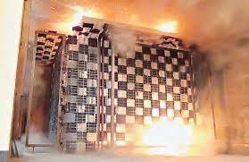
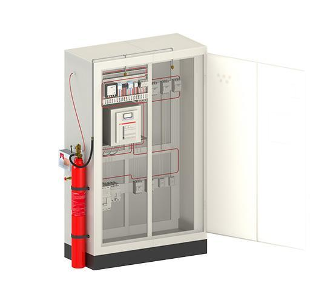
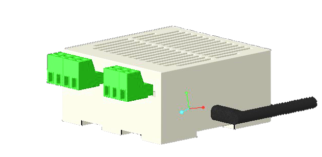

Why SnifferBots
Two popular fixes. Neither one predicts a fire.
Internal arc-tested panels and gas suppression systems are both well-established — and both only respond after something has already gone wrong. Here's how they actually compare with a system built to catch the problem earlier.
Where fires start
Factors affecting control panel safety
High temperature
High humidity
Dust
Incorrect feeder ratings
Incorrect workmanship
Uneven load currents
No / improper maintenance
Ageing switchgear
The options on the market
What each approach actually does

Reacts after the fact
Solution 1 — Internal arc tested panels (IEC 61641)
- Feature
- Extra mechanical strength, tested by creating a controlled arc inside the feeder so pressure vents from the top of the panel rather than out the front door.
- Advantage
- A short circuit inside a feeder compartment stays contained — it doesn't spill over to whoever is standing in front of the closed panel.
- Constraints
- Higher initial product cost than standard panels. There is still no system to predict the fault or to switch things off before the fire happens — only to contain it once it has.
- Remark
- Can't prevent the fire or reduce its chances. Afterwards: clean the feeder compartment, replace spring-loaded flaps, replace the feeder, bus bars and wiring — plus lost production time and, in the worst case, casualties.

Reacts after the fact
Solution 2 — Gas suppression system
- Feature
- A temperature-sensitive polymer tube runs through every feeder, backed by a pressurised fire-extinguishing gas tank mounted on the panel top.
- Advantage
- If a feeder compartment catches fire, the tube punctures at a set temperature and releases gas to extinguish it.
- Constraints
- Running the tube through each compartment breaks the metal segregation between feeders, so fire can spread more easily to the next one — and with multiple simultaneous fire points, suppression doesn't work effectively.
- Observation
- Can't avoid or reduce the chance of fire. Tube and gas tank need replacing after use, on top of cleaning the compartment and replacing the feeder, bus bars and wiring — plus lost production time and potential casualties.

Predicts & acts early
SnifferBots — intelligent monitoring, predictive & proactive
- Feature
- A dedicated sensor in every feeder compartment reads temperature, humidity and gas continuously, wirelessly linked to the cloud.
- Advantage
- The application analyses sensor combinations to judge a developing situation in advance — surfacing a Green–Orange–Red signal well before conditions reach a critical point.
- Response
- Authorised users can trip the feeder remotely from PC or mobile; in an extreme situation with nobody reachable, SnifferBots can generate its own proactive trip command.
- Good to know
- SnifferBots is not a fire-extinguishing product, and its predictive performance depends on correct installation and a number of external factors — see the full disclaimer on the Product page.
Side by side
Capability comparison
| Capability | Arc-tested panels | Gas suppression | SnifferBots |
|---|---|---|---|
| Predicts a developing fault before it happens | No | No | Yes |
| Takes proactive action automatically | No | Only once heat triggers it | Yes — can self-trip |
| Live alerts to PC & mobile | No | No | Yes |
| Each feeder monitored independently | Panel-level design | Shared tube can spread risk | Yes — one unit per feeder |
| Clean-up / part replacement after an event | Required | Required | Designed to alert & act before it gets there* |
* SnifferBots is not a fire-extinguishing product; outcomes depend on correct installation, connectivity and other external factors. Full disclaimer on the Product page.